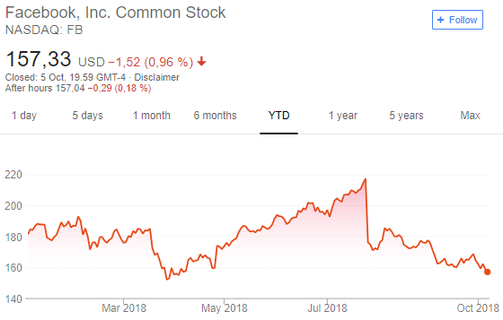

#deletefacebook

.. well I’m more like “soft-deleting” Facebook. I just deleted my Facebook app from my Android phone, and still plan use Facebook on my desktop. But this will decrease my Facebook use significantly:
- Wake up: check Facebook on phone
- Waiting on something: check Facebook on Phone
- Going to sleep: check Facebook on phone
Why? I want to do this, even if just symbolically because I’m just one person, to say that I strongly disapprove of what Facebook stands for today.
Facebook is full of tiny little “we only care about money” things:
-
If you click on a notification that takes you to a deleted reply in a conversation, you’ll just get a blank screen. The server most likely returns an error code, but they just probably forgot (or don’t care) to add the error branch.
-
If I click on a notification of my friend commenting/liking some post in some page, I am taken to that page’s feed with scroll offset way above of the post I’m supposed to see. I have to scroll down to actually even start seeing the thing I was trying to see.
-
When I see “your friend has replied to a comment in a thread” -type notification, the entire comment feed opens to the bottom of the feed. If the feed has a lot of comments, it might be close to impossible to see where my friend’s reply was and what was its content.
-
In Messenger, a friend sent me a photo that appeared blank. Turns out it was probably a forgotten error branch again, because the photo loaded fine on desktop.. I mean, there are linters available that don’t let code through that lacks error handling.
-
Crashes way too often, and it’s just infuriating having to wonder if they’re just playing a test on me by purposefully fucking with me by crashing or if it’s just a genuine crash. Having to even think about this.. Facebook, fuck you!
-
When I click on a link to an external site and finish reading it, I might want to see its comment feed back on Facebook. Facebook might’ve refreshed the feed while I was reading, and I don’t see the link anymore to be able to open its comment feed.
-
Facebook allows advertisers to target you even based on information you only gave Facebook for security purposes. You can even be targeted by a phone number your friend has stored on her contacts, even if you didn’t give your own phone number to Facebook.
-
The “video’s audio automatically plays” bullshit. Yes, you can turn the default off, but it’s reset multiple times, or maybe it just remembers you turning audio on for a specific video, and it sets “audio enabled” as default for all videos that you’ll watch after that?
-
The “links open in Facebook’s own embedded browser” bullshit. Yes, you can turn it off - but fuck you for trying!
-
Recently I’ve been signed out of Facebook for two separate times. The first one was full a few weeks before the security breach came public. I’m sure the first one was security related too because my IFTTT integrations stopped working, so Facebook must’ve reset access tokens for integrations. Why wasn’t I notified of a security concern the first time around, but only after the public disclosure?
All of the above mentioned points feel like rookie mistakes, and it’s mind boggling to think of how many things they have fucked up. I will vote on me behaviour to significantly lessen the use of Facebook. Who knows, maybe it’ll even make me happier.
Bonus reading: WhatsApp Cofounder Brian Acton Gives The Inside Story On #DeleteFacebook And Why He Left $850 Million Behind

Thanks for reading! 😍
If you like my writing, consider following me on Twitter.
Stay updated on my blog posts & projects - sign up for
my newsletter. 🚀
No spam, unsubscribe any time.
RSS also available.